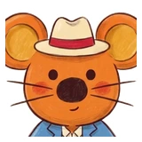
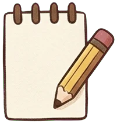
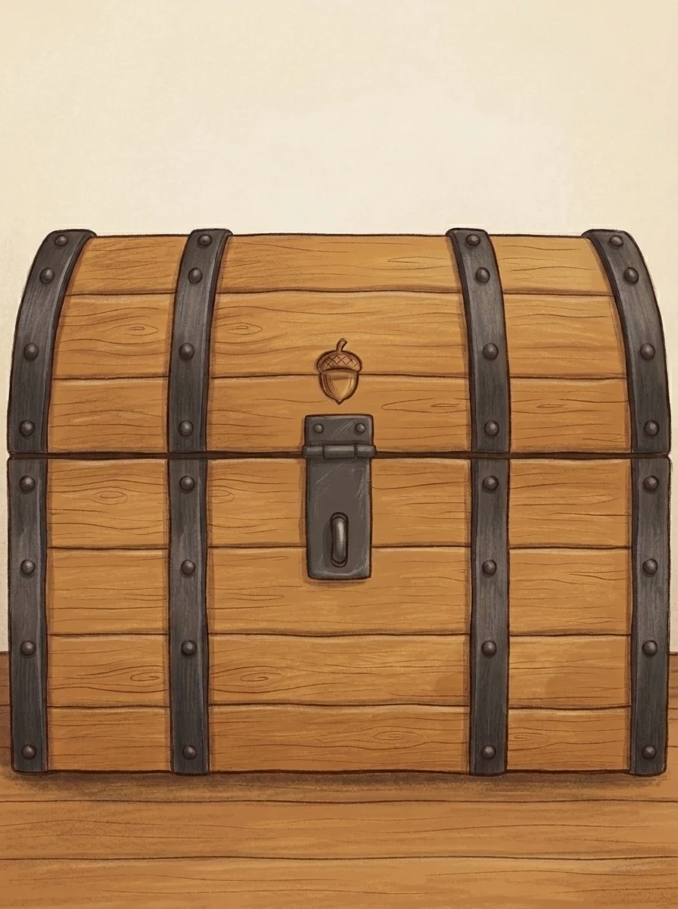
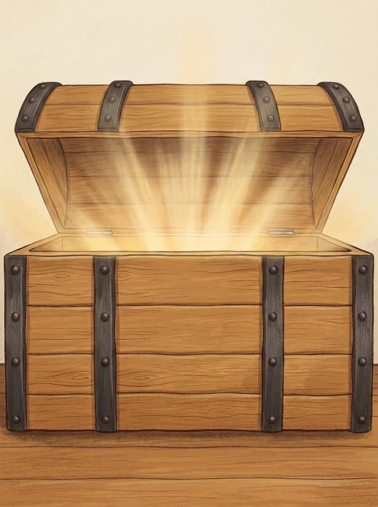
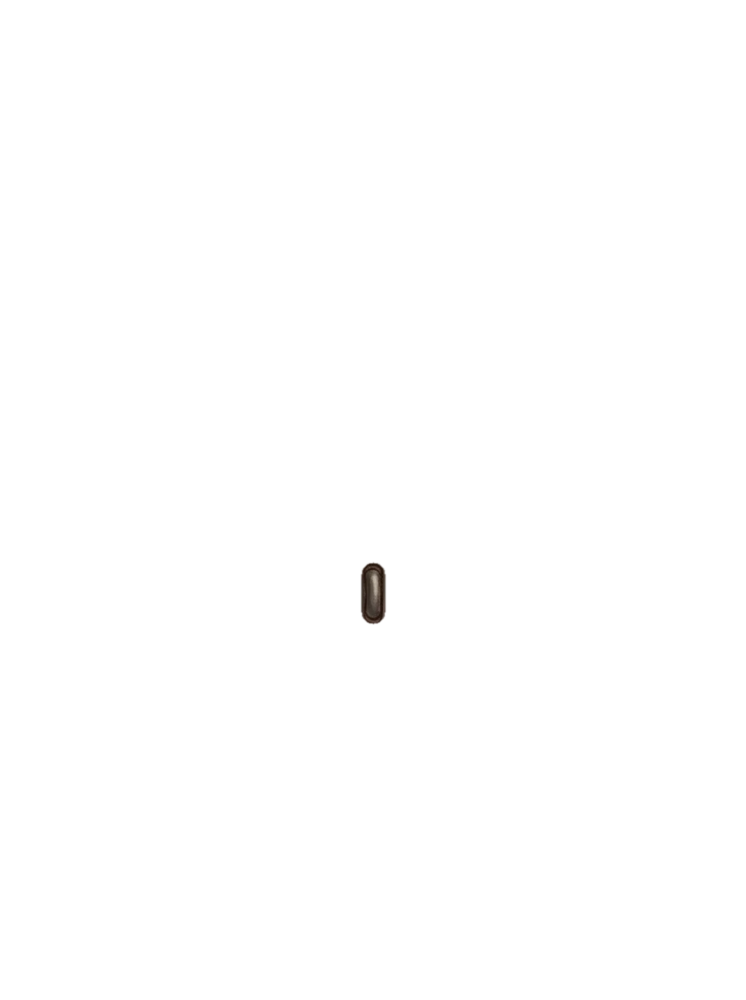

← 옆으로 밀어서 둘러보기 →
증거
Deduction

증거 기록

내 메모
아직 알게 된 장소가 없어요.


내 메모
아직 알게 된 장소가 없어요.
사건 목록으로 나갈까요?
지금까지 조사한 내용은 저장돼요.
남은 이야기를 들으려면 다시 말을 걸어야 해요.
심문을 나갈까요?
다시 심문할 때는 처음부터 시작해요.
수집한 증거와 기록은 그대로 남아요.




 자물쇠를 모두 열었어요!
단서를 모두 이었어요!
자물쇠를 모두 열었어요!
단서를 모두 이었어요!